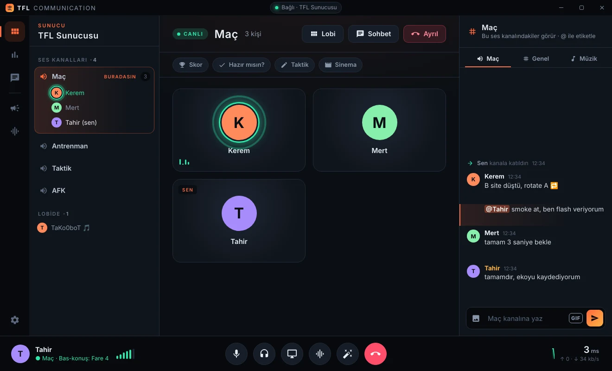
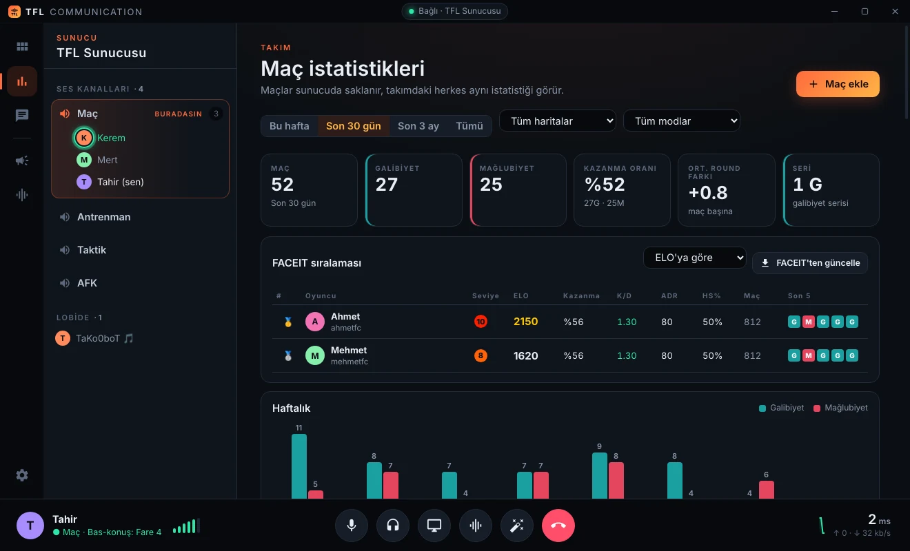

Takımın sesi.
Gecikme yok.
CS takımları için yapılmış sesli iletişim. Yapay zekâ klavye ve fare sesini temizler, müzik botu sohbeti kapatmaz, taktik tahtası ve maç istatistikleri tek pencerede.

ses paketleri, oyun içi konuşma kadar hızlı
net ve doğal ses kalitesi
klavye, fare ve oda sesi filtresi
kendi sunucunuz, sizin kurallarınız
Maç için gereken her şey
Discord'un rahatlığı, Mumble'ın hızı. Takım olarak oynayanlar için ayarlandı.
Yapay zekâ filtresi
RNNoise sinir ağı konuşmanı ayırır; konuşmadığında mikrofon tamamen susar. Takım arkadaşın klavyeni duymaz.
Bas-konuş, her tuş
Klavye, kombinasyon ya da farenin yan tuşları. Clutch tuşu ile bir anda herkesi kıs, sadece maça odaklan.
TaKo0boT müzik
YouTube ve Spotify'dan şarkı çal. Müzik sohbetin yanında küçük bir sekmede durur, ekranı kaplamaz.
Taktik tahtası
Aktif tüm CS2 haritalarında canlı çizim; herkes aynı anda görür. Stratları kütüphaneye kaydet.
Maç istatistikleri
Skor, harita, haftalık galibiyet/mağlubiyet ve oyuncu analizleri. Veriler sunucuda, herkes aynı tabloyu görür.
FACEIT entegrasyonu
Profil linkini yapıştır: ELO, K/D, kazanma oranı ve aranızdaki sıralama. Ortak maçlar otomatik eklenir.
Hazır mısın?
Tek tıkla herkese hazır kontrolü, maç sonunda skor ve oyuncu özeti.
Şifreli odalar
Maç odalarına şifre ve kişi sınırı koy. Yönetici dahil herkese şifre sorulur.
Birlikte izle
YouTube'dan dizi, film, maç tekrarı; herkes aynı saniyede izler. Sohbet, GIF ve tepkiler de cabası.
Kaç maç, kaç galibiyet, hangi harita?
Maçlarınız tarihleriyle birlikte saklanır. Haftalık tabloyla nerede iyi, nerede kötü olduğunuzu görürsünüz.
- Haftalık galibiyet / mağlubiyet ve seri takibi
- Harita bazında başarı oranları
- Oyuncu başına K/D, ADR, HS% ve MVP
- FACEIT'ten otomatik maç ve istatistik çekme

Bir dakikada hazır
İndir
Yukarıdaki Windows için indir düğmesine bas. Tarayıcı “yaygın olarak indirilmiyor” derse Sakla seç.
Kur
Dosyayı aç. Windows mavi bir uyarı gösterirse Ek bilgi → Yine de çalıştır. İlk kurulum uygulama motorunu indirir (~110 MB).
Bağlan
Adını ve sunucu şifresini yaz, Bağlan. Sonraki güncellemeler soldaki menüde tek tıkla gelir.